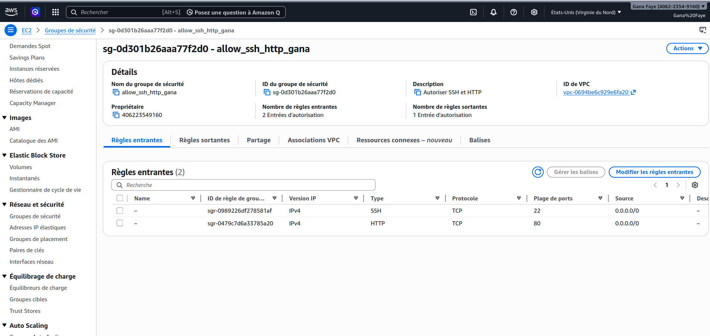
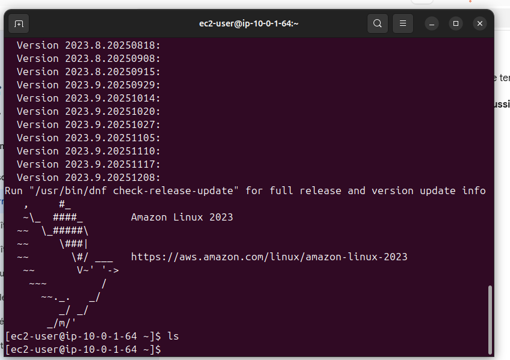

Contexte et Objectifs
Le Problème : La configuration manuelle est lente, source d'erreurs et difficile à reproduire.
La Solution : L'automatisation via Terraform.
🎯 Objectifs du Projet :
- Déployer une instance EC2 sur AWS de manière programmable
- Héberger un portfolio professionnel automatiquement
- Garantir la reproductibilité de l'environnement
📸 Capture 3 : Problématique initiale

Figure 3 : Complexité de la configuration manuelle
Cliquez pour zoomer
Architecture & Ressources AWS
Après terraform apply, AWS a créé :
Réseau
VPC, Subnet, Internet Gateway
VPC, Subnet, Internet Gateway
Sécurité
Security Groups (SSH 22, HTTP 80)
Security Groups (SSH 22, HTTP 80)
Compute
Instance EC2 (Amazon Linux 2023)
Instance EC2 (Amazon Linux 2023)
📸 Capture 5 : Instance EC2

Figure 5a : Instance EC2 opérationnelle
Cliquez pour zoomer
📸 Capture 6 : Security Group

Figure 5b : Règles du Security Group
Cliquez pour zoomer
Connexion SSH & État Nginx
ssh -i terraform-key.pem ec2-user@54.161.173.16
sudo systemctl status nginx
📸 Capture 8 : Connexion SSH

Figure 7a : Connexion SSH réussie
Cliquez pour zoomer
📸 Capture 9 : Nginx par défaut

Figure 7b : Page Nginx par défaut
Cliquez pour zoomer
Défis & Solutions
Dépendances AWS :
terraform state rm et -replace Permissions Nginx :
sudo tee pour les droits root📸 Capture 10 : Erreur permission

Figure 8a : Erreur avant correction
Cliquez pour zoomer
📸 Capture 11 : Portfolio corrigé

Figure 8b : Portfolio après correction
Cliquez pour zoomer
Positionnement DevOps
| Caractéristique | Terraform | Ansible |
|---|---|---|
| Rôle | Provisioning (Architecte) | Configuration (Décorateur) |
| Cible | API Cloud | OS / Logiciels |
| Usage ici | EC2, VPC, SG | Bootstrapping |
📸 Capture 14 : Comparaison

Figure 10 : Provisioning vs Configuration
Cliquez pour zoomer
Conclusion & Perspectives
Acquis : Cycle de vie IaC, AWS (EC2, VPC, SG), User Data
Prochaines étapes :
🐳 Conteneurisation Odoo 18 + Docker
⚙️ Pipeline CI/CD Jenkins
🐳 Conteneurisation Odoo 18 + Docker
⚙️ Pipeline CI/CD Jenkins
📸 Capture 15 : Pipeline CI/CD

Figure 11 : Architecture future
Cliquez pour zoomer
"L'automatisation est la clé de la fiabilité et de la rapidité"
Merci pour votre attention !